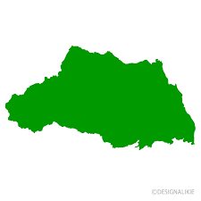

埼玉県（さいたまけん）は、日本の関東地方に位置する都道府県です。東京都に隣接し、人口は約740万人（2021年時点）です。
埼玉県は豊かな自然環境や観光地があり、多くの人々が訪れます。例えば、秩父地域の美しい山々や川、埼玉スーパーアリーナや埼玉スタジアム2002などのスポーツ施設、また、歴史的な寺社や城址なども多くあります。
さらに、埼玉県は交通の利便性も高く、東京都心からのアクセスも良好です。多くの人々にとって、住みやすい場所として人気があります。
埼玉県内を見渡してみると埼玉県には何もないんじゃなくて海以外はなんでもある、そう思えます。都会過ぎず田舎過ぎない立地だからこそ快適な暮らしが実現できます。それが埼玉の本当の魅力です。